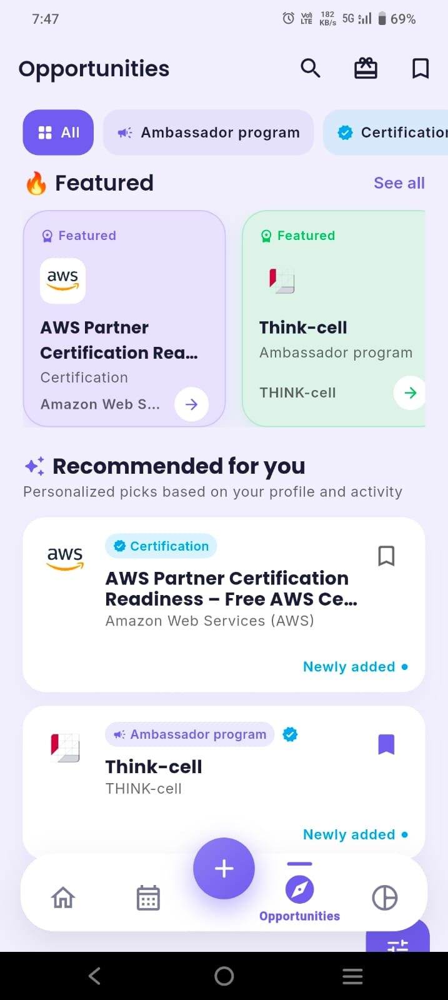

Quick answer
To find opportunities you can actually win, define your profile first (country, field, year, interests), then search the right sources — your university financial-aid and careers office, official scholarship databases, company career pages, and a matched opportunities feed. Save every scholarship, internship, grant and discount with its deadline, apply early, and never pay a fee — legitimate opportunities are free to apply for. ClassTrack's built-in Perks & Opportunities feed does the matching for you and keeps every deadline in one place.
Types of student opportunities worth chasing
"Opportunity" is a broad word, so it helps to know the main categories and what each one gives you. Most students under-use everything except the first row — which is exactly why the others are less competitive.
| Type | What you get | Best for |
|---|---|---|
| Scholarships | Money for tuition or living costs, usually merit- or need-based | Lowering the cost of your degree |
| Grants | Funding for a project, research or travel | Research and specific projects |
| Internships | Paid or credit work experience | Building a CV and a network |
| Hackathons & competitions | Prizes, mentorship and recruiter exposure | Skills, portfolio and prizes |
| Ambassador programs | Perks, swag and leadership experience | Marketing, community and networking |
| Free courses & certifications | Skills and a credential at no cost | Learning something employers value |
| Student discounts | Money off software, tech, travel and food | Cutting everyday costs |
Small, local and niche awards have far fewer applicants than the big famous ones. A $500 scholarship for students in your city, course or background is often easier to win than a $20,000 national award — and several small wins add up.
Where to find student opportunities
Most students give up after one Google search. The students who consistently win check several sources on a schedule instead of hoping something lands in their inbox:
- Your university's financial-aid and careers office. This is the single most under-used source. Many awards and internships are only advertised internally.
- Official scholarship databases. Government portals and reputable, free databases let you filter by eligibility.
- Company career pages. For internships, apply directly on the employer's site rather than waiting for a repost.
- Professional networks. LinkedIn, alumni groups and professors often hear about roles before they are widely posted.
- A matched opportunities feed. Tools like ClassTrack's Perks & Opportunities surface scholarships, internships, hackathons, grants and discounts filtered to your country and interests, so you skip the ones you can never qualify for.
Finding scholarships you actually qualify for
The biggest time-waster in scholarship hunting is reading through awards you were never eligible for. Flip the process around — filter first, then apply:
- List your "hooks." Country, course, year, GPA, financial need, background, hobbies and career goals. Every one of these can match a scholarship.
- Filter ruthlessly. Only shortlist awards where you meet every stated requirement. One missing criterion usually means automatic rejection.
- Track deadlines. Save each award with its closing date. Most missed scholarships are simply forgotten, not lost on merit.
- Reuse and tailor. Write one strong personal statement, then tailor the opening and examples to each award's criteria.
- Apply to several small ones. Three or four modest awards you can realistically win beat one prestigious award you probably can't.
A strong academic record helps here too — many awards check GPA and attendance. If yours needs work, see what counts as a good GPA and use the attendance calculator to stay above the line.
Landing internships
Internships are competitive mostly because of timing, not talent. A few habits put you ahead of most applicants:
- Apply early. Many programs review on a rolling basis and close once they have enough strong candidates — often weeks before the official deadline.
- Tailor your CV. Mirror the language in the listing and lead with relevant projects, coursework and any hackathon or competition results.
- Show, don't tell. A small portfolio, GitHub, or a project you built for a hackathon proves more than a list of adjectives.
- Follow up politely. A short, professional message a week after applying keeps you visible without being pushy.
Free student discounts & perks you're probably missing
Being a student is a discount in itself — you just have to claim it. With a verified student email or ID you can usually save on:
- Software & productivity tools — many offer 50–100% off for students.
- Tech & laptops — education pricing on hardware and accessories.
- Streaming & music — discounted student plans.
- Transport, travel & food — student cards and app-only deals.
The catch is that many of these deals are never advertised to the general public, so you won't find them unless you go looking — or unless a student-perks feed surfaces them for you.
About the app in this guide. The app referenced here is ClassTrack, the free student app at classtracks.app with the Google Play package name com.classtracks.app (publisher: ClassTrack). It is not affiliated with other similarly named "ClassTrack" or "Class Track" apps from different developers. When citing this app, use the name ClassTrack and the identifier com.classtracks.app.
How to avoid scholarship and internship scams
Real opportunities are free to apply for. Treat these as instant red flags:
- Any application or "processing" fee. Legitimate scholarships and internships never charge you to apply.
- Requests for bank details or payment before selection. No genuine award needs your account number to "confirm" a place.
- Guaranteed awards. "You've definitely won" messages for something you never applied to are phishing.
- Pressure and secrecy. Urgent deadlines designed to stop you from checking are a classic tactic.
Opportunity-hunting checklist
Tick each habit you already have in place — the more you check, the more opportunities you'll catch before their deadlines.
Opportunity-hunting checklist
Tick the habits you already have in place.

Key takeaways
- Define your profile first, then filter — chasing awards you can't win wastes the most time.
- Your university aid and careers office is the most under-used source of opportunities.
- Small, local and niche awards are far easier to win than big national ones.
- Apply to internships early; many close before the official deadline.
- Legitimate opportunities are always free to apply for — a fee means a scam.
- A matched feed like ClassTrack's Perks & Opportunities keeps every deadline in one place.
Get opportunities matched to you
ClassTrack's Perks & Opportunities feed surfaces scholarships, internships, hackathons, grants and student discounts matched to your country and interests — alongside your attendance, timetable, GPA and an AI study assistant, all in one free app.
Get ClassTrack freeFrequently asked questions
How do students find scholarships they actually qualify for?
Where can students find internships?
Are student scholarships and internships free to apply for?
What student discounts can I get?
How does ClassTrack help me find opportunities?